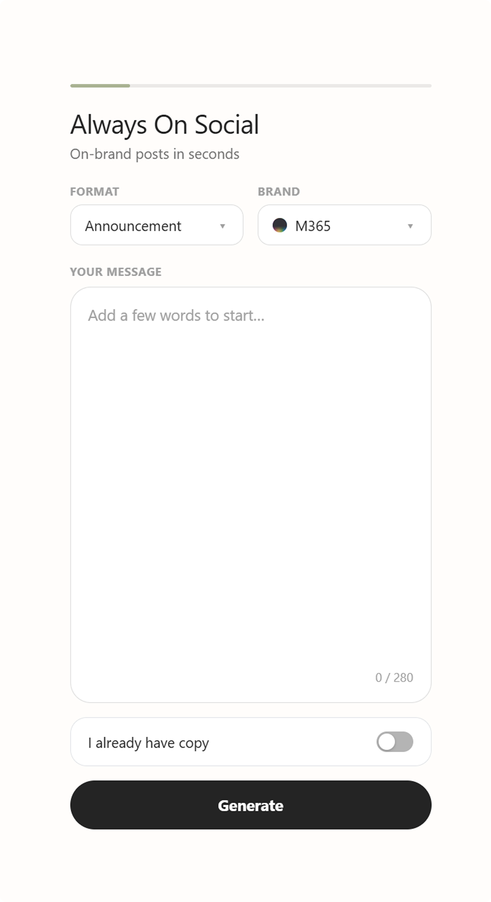

Always On Social
Powered by Touchstone
What is it: Always On Social is the AI Task Force’s brand-compliant social content platform for Microsoft Brands. It transforms simple product updates into publish-ready social content, ensuring brand voice, approved messaging, and compliance standards are applied automatically. The platform generates both copy and creative assets across key social channels and formats, helping teams produce high-quality content faster and with greater consistency. Built on a shared brand knowledge system, it enables scalable content creation, automated brand validation, and rapid onboarding of additional brands. The result is a streamlined workflow where on-brand content is the default, reducing manual review while increasing speed, accuracy, and consistency across campaigns.
Why we made it: Always On Social removes the bottleneck between a fast-moving social content calendar and brand compliance. Microsoft 365 Copilot releases require frequent social updates, but creating them traditionally depended on multiple specialists and manual reviews, making the process slow, inconsistent, and difficult to scale. The platform solves this by embedding brand standards directly into the content creation process. Brand voice, naming conventions, messaging guardrails, visual identity, and template requirements are codified as structured data, ensuring every post is brand-correct by default. Teams can generate approved copy and creative assets in minutes across all required social formats, reducing review overhead while increasing speed, consistency, and output. By making compliance a built-in property of the workflow rather than a final checkpoint, Always On Social enables the team to keep pace with product innovation and maintain a continuous, high-quality social presence.
Product update. Brand Brain. Skill. Copy options. Visual template. Optional motion. Social-ready output

- 01Enter your contentChoose a brand and social format, then enter a short feature update.
- 02Generate captionsThe system creates three on-brand caption options that follow naming, messaging, and compliance guidelines.
- 03Choose a captionReview the options, regenerate if needed, and select the one you want to use.
- 04Select a designBrand-approved colors, typography, and styling are applied automatically.
- 05Add animationSelect an approved motion style or keep the post static.
- 06Export your assetsChoose your desired formats and file type, then export your finished posts.
- 07Your brand-compliant social assets are ready to share across channels.
- 08More Templets, Brands and formats to come.
Touchstone System
What is it: Touchstone is a brand-compliance operating system for creative AI. Its Brain holds every Microsoft 365 Copilot brand rule (voice, messaging, color, type, layout and motion) as versioned data, and its skills turn that knowledge into finished work: copy, templates, motion and audits. The skills hold no brand values of their own. They read the Brain at run time, hand the result to independent sub-agents to check, and loop until it passes with a score. Always-On Social is its first production use: a Figma plugin that turns a rough feature update into on-brand, social-ready posts.
Why we made it: Social teams have to move faster than the design process allows. Microsoft 365 Copilot model releases and feature updates often need a post within an 8 to 15-hour window, and many of those posts follow the same text-led pattern every one to two weeks. The people writing them are on tight deadlines, often without a designer on hand, yet every post still has to meet the brand. We built Touchstone to power self-serve apps like Always-On Social, tools that let anyone create on-brand work without waiting on a designer. It means the brand is written down once and every tool that draws on it stays on brand automatically: marketers get usable options in minutes, the audit catches issues before export, and design hours go to the work that actually needs a designer.
Touchstone Architecture
Brains
Single Source of Truth per Brand
Characteristics
- One brain per brand
- Always up-to-date
- Version controlled
- Referenced by all projects and skills
- Changes automatically propagate
Centralized brand knowledge referenced by all projects and skills.
Microsoft 365 Copilot Brand Brain
- Brand Foundation
- Voice & Tone
- Messaging
- Social
- Copy Library
- Few-Shot Examples
- Visual System
- Motion Patterns
References / Uses
Skills
Execution Layer — each skill contains its workflow
Characteristics
- Each skill includes workflow (steps)
- Different skills can call other skills
- Calls sub-agents when needed
- Includes retry / fix logic
Project-based skills that execute tasks and contain workflow logic.
Generate Social Posts
- Input Analysis
- Copy Generation
- Visual Generation
- Platform Formatting
- Export
Feature Copy
- Input Analysis
- Copy Writing
- Tone & Style Application
- Length / Structure Optimization
Motion Presets
- Preset Selection
- Model Application
- Visual Consistency
- Export
Invokes ↓ · Sub-Agent Result Return ↑
Sub-Agents
Specialized Judgment / Audit — invoked by skills
Characteristics
- Each sub-agent has a specific role
- Invoked by main skill when needed
- Makes independent judgment
- Returns result (pass / fail + issues)
Focused auditors that make an independent pass / fail judgment when a skill calls them.
Social QA Agent
- Copy Length Check
- Brand Tone Check
- Visual Consistency Check
- Platform Spec Check
- CTA / Hashtag Check
- Pass / Fail
Visual Auditor
- Brand Visual Check
- Color, Typography, Layout
- Logo / Clear Space
- Accessibility Check
- Pass / Fail
Retry / Fix Loop
Loop Engineering
Automated Review → Fix → Repeat
Loop Behavior
- Each check returns Pass / Fail
- If Fail, fix or regenerate and re-check
- Max retry count configurable
- Final Pass delivers result to user
- All results are logged
Example loop — Always-On Social · Generate Social Posts skill
- Copy Length Check
- Brand Tone Check
- Visual Consistency Check
- Platform Spec Check
- CTA / Hashtag Check
- Brand Visual Check
- Color, Typography, Layout
- Logo / Clear Space
- Accessibility Check
Structure Summary
- Brain (Knowledge)
- Centralized brand knowledge, single source of truth per brand.
- Skill (Execution & Workflow)
- Contains execution steps and workflow; can call other skills and sub-agents.
- Sub-Agent (Specialized Role)
- Focused auditor / judgment role, invoked by skills when needed.
- Loop Engineering (Repeat)
- Automated loop of generate → audit → fix / regenerate → re-audit until pass or max retries.
Key Benefits
- Consistent brand output
- Modular and scalable structure
- Clear separation of concerns
- Reliable quality through loop engineering
- Maintainable and easy to extend
- Reusable across projects